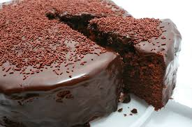

Home Bolo de Cenoura Bolo de chocolate Bolo de Milho

Poucas receitas são tão tentadoras quanto um bom bolo de chocolate quando se trata de uma sobremesa clássica e deliciosa. Esta receita simples e fácil de preparar é a solução perfeita para satisfazer aquele desejo por um doce delicioso e prazeroso. Combinando ingredientes básicos, como ovos, açúcar, farinha de trigo e um toque generoso de chocolate em pó, este bolo de chocolate derrete na boca a cada mordida. A adição estratégica de água quente e fermento em pó confere a textura ideal para esse bolo, garantindo maciez e um sabor agradável. O segredo, no entanto, está na cobertura deliciosa que coroa essa iguaria. Uma mistura cuidadosa de leite, chocolate em pó, manteiga e açúcar é aquecida até atingir o ponto de fervura, resultando em uma cobertura cremosa e irresistível. Ao ser derramada sobre o bolo ainda quente, essa cobertura se funde perfeitamente à massa, proporcionando uma experiência de sabor inesquecível. Esta receita de bolo de chocolate é uma excelente opção para encontros familiares, momentos de celebração ou simplesmente para um momento de prazer pessoal.